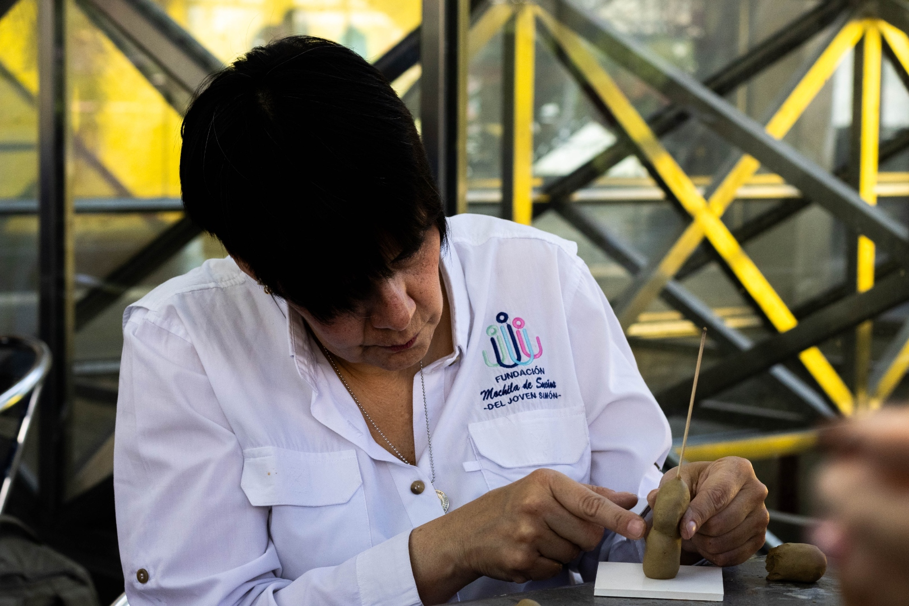
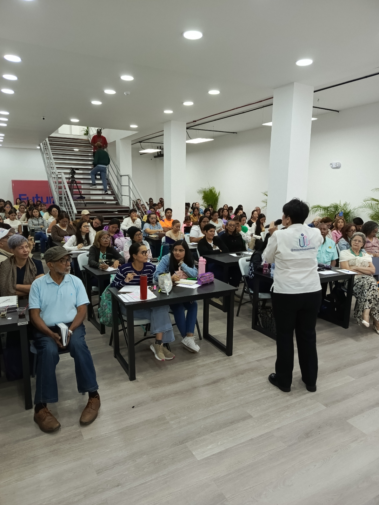

Voz reconocida en neurodiversidad, estrategias DEI, educación inclusiva y derechos humanos en América Latina y España. Más de 35 años transformando organizaciones y comunidades.

Conferencista internacional, consultora educativa y organizacional, y defensora activa de la inclusión social con más de 35 años de trayectoria intersectorial.
Autora de 5 conferencias magistrales presentadas en más de 15 congresos nacionales e internacionales en Venezuela, España, Ecuador, Perú y México.
Su formación jurídica y en Gerencia Empresarial, combinada con 14+ años de trabajo directo con comunidades neurodivergentes, le permite traducir principios de inclusión en marcos accionables para organizaciones, instituciones públicas, ONG y comunidades educativas.
Intervención educativa y comunitaria para personas dentro del Espectro Autista
Diversidad, equidad e inclusión como motor de transformación organizacional
Diseño Universal del Aprendizaje aplicado a contextos comunitarios y educativos
Justicia, paz y marcos de protección para comunidades diversas
Transformación del aula para que cada cerebro pueda aprender
Programas de alto impacto para poblaciones neurodivergentes y vulnerables

5 conferencias presentadas en más de 15 congresos internacionales
Jóvenes neurodivergentes: habilidades para la vida y el éxito profesional.
Modelo educativo inclusivo y comunitario: intervención en comunidades neurodivergentes.
Diversidad, equidad e inclusión como estrategia empresarial de alto impacto.
Neurodiversidad sin barreras: derechos humanos, justicia y paz para comunidades diversas.
Cómo transformar el aula para que cada cerebro pueda aprender.
Presencia en congresos de Venezuela, España, Ecuador, Perú y México
Jóvenes Neurodivergentes en el Mercado Laboral
Modelo Educativo Inclusivo y Comunitario
Neurodiversidad sin Límites: Habilidades para el Éxito
Modelo Educativo Inclusivo en Comunidades Neurodivergentes
Ocio Recreativo Inclusivo en Comunidades Neurodivergentes
Neuroeducación y Calidad de Vida del Estudiante Neurodivergente
Neuroeducación y Calidad de Vida
Necesidades y Potencialidades de las Aulas Neurodivergentes
Desarrollo Integral e Integración de Personas Neurodivergentes
Reconocimiento por el valioso aporte de conocimientos y herramientas para el abordaje del Espectro Autista
Reconocimiento por la labor y el apoyo sostenido a la Comunidad Autista
Participación en el Simposio Internacional "Educación Emocional: Clave para el Bienestar Educativo"
Designación como Embajadora por la Paz Universal
Universidad Santa María (USM) — Caracas, Venezuela · 2006
Universidad Santa María (USM) — Caracas, Venezuela · 1992
Presentaciones en español (inglés disponible). Abierta a viajes internacionales.